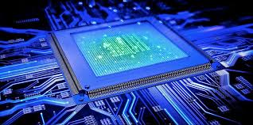

El Hardware y sus Componentes
El hardware es la base física de cualquier sistema informático. Comprende todos los componentes tangibles que permiten el funcionamiento de un ordenador, desde la unidad central de procesamiento (CPU) hasta los dispositivos de almacenamiento y periféricos. En este apartado, compartiré los conceptos fundamentales del hardware que he aprendido y su importancia en la informática.
Componentes principales del hardware:
Unidad Central de Procesamiento (CPU): Es el "cerebro" del ordenador. Se encarga de procesar instrucciones y realizar cálculos. Se compone de la unidad aritmético-lógica (ALU) y la unidad de control (CU).p>
Memoria RAM: Es la memoria de acceso rápido donde se almacenan temporalmente los datos y programas en ejecución.
Almacenamiento: Se divide en almacenamiento primario (memoria RAM) y almacenamiento secundario, como discos duros (HDD), unidades de estado sólido (SSD) y unidades de almacenamiento externo.
Placa base (Motherboard): Es el circuito principal donde se conectan todos los componentes internos del sistema.
Fuente de alimentación: Transforma la corriente eléctrica en los voltajes adecuados para los distintos componentes del ordenador.
Tarjeta gráfica (GPU): Procesa gráficos y es fundamental en tareas como el diseño, la edición de vídeo y los videojuegos.
Periféricos: Incluyen dispositivos de entrada (teclado, ratón, escáner) y salida (monitor, impresora, altavoces).
He aprendido que la arquitectura de un ordenador sigue el modelo de von Neumann, donde los datos y las instrucciones se almacenan en la memoria y se procesan secuencialmente por la CPU. Además, el sistema de buses permite la comunicación entre los distintos componentes a través de canales de datos, direcciones y control.